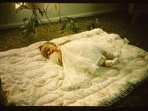

Chapter 14 – DAUGHTER, SHELLIE ANN BROWNING
Shellie Ann was born on June 21, 1967. She was a beautiful, delightful, contented baby. She never cried unless she was hungry or couldn't see me or Ken. As long as we stayed in the same room with her, where she could see one or the other of us, she was happy. If we left the room, she would cry. I can still see her in my mind, sitting in her little carrier or swing playing with her toys. Sandi had been an only child for over five years so we were concerned she might be jealous of the baby so we bought her a cute little doll. She loved the doll, but wasn't jealous. She loved Shellie and was a cute, helpful big sister.